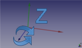
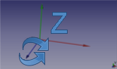

|
| Description |
|---|
| Cette macro peut faire pivoter l'écran dans un angle et axe défini et crée un plan face à l'écran. |
| Auteur |
| Mario52 |
| Liens |
| Recettes macros Comment installer une macro Comment ajouter une barre d'outils |
| Version |
| 0.6 |
| Date dernière modification |
| 2016-12-13 |
Description
Cette macro peut faire pivoter l'écran dans un angle et axe défini et crée un plan face à l'écran pour créer un objet dans les positions réglées, positionner la face sélectionnée face à l'écran, peut détecter la position de la caméra, alignez la vue de la face ou de l'axe face à l'écran et de modifier les paramètres (Lacet, Tangage, Roulis) de l'objet pour l'aligner dans la position de la camera.
Utilisation
Utilisation facile,
Camera of Axis: Boîte de dialogue pour entrer les valeurs de rotation en degrés (la rotation se fait sur un angle à la fois).
Angle rotation Axis in degrees: Selection de l'axe de rotation X Y ou Z.
Axe of rotation
-
 Accept the rotation : Effectue la rotation dans l'angle donné.
Accept the rotation : Effectue la rotation dans l'angle donné.
Virtual
-
 Detect camera orientation : Detecte l'orientation de la camera et affiche les résultats dans la vue rapport. Les valeurs retournées proviennent de la fonction getCameraOrientation().
Detect camera orientation : Detecte l'orientation de la camera et affiche les résultats dans la vue rapport. Les valeurs retournées proviennent de la fonction getCameraOrientation().
Align view to face selected
-
 To Face. : Aligne la face sélectionnée sur la vue 3D (face à l'écran). Chaque clic change la vue de l'objet sélectionné pour NormalAt : "(0,0,1) (0,0,-1) (0,1,0) (0,-1,0) (1,0,0) (-1,0,0)"
To Face. : Aligne la face sélectionnée sur la vue 3D (face à l'écran). Chaque clic change la vue de l'objet sélectionné pour NormalAt : "(0,0,1) (0,0,-1) (0,1,0) (0,-1,0) (1,0,0) (-1,0,0)"
-
 To Axis. : Aligne sur la vue 3D l'axe de la face sélectionnée (face à l'écran). Chaque clic change la vue de l'objet sélectionné pour Surface Axis : "(0,0,1) (0,0,-1) (0,1,0) (0,-1,0) (1,0,0) (-1,0,0)"
To Axis. : Aligne sur la vue 3D l'axe de la face sélectionnée (face à l'écran). Chaque clic change la vue de l'objet sélectionné pour Surface Axis : "(0,0,1) (0,0,-1) (0,1,0) (0,-1,0) (1,0,0) (-1,0,0)"
- Align object to view. : Aligne l'objet sélectionné à la vue actuelle. Les valeurs modifiées sont : Rotation Axis((X, Y, Z), Angle) même que Euler angles : Lacet (Yaw), Tangage (Pitch), Roulis (Roll), la translation n'est pas modifiée.
- Create plane of view. : Un plan circulaire est créé face à l'écran aux coordonnées du clic de souris sur l'objet. Le rayon du plan circulaire est égal à la plus grande dimension du BoundBox. Si aucun objet n'est sélectionné le plan est créé aux coordonnées 0, 0, 0 avec un rayon de 20 mm. Le rayon du plan par défaut peut être modifié à la ligne 515:
rayon = 20 # Radius of plane
Section Photo

- ComboBox Actual : choisissez votre définition d'écran qui déterminera les dimensions de l'image
- Available (pre-defined):
- "Actual" (definition actual of screen)
- "Icon 16 x 16"
- "Icon 32 x 32"
- "Icon 64 x 64"
- "Icon 128 x 128"
- "CGA 320 x 200"
- "QVGA 320 x 240"
- "VGA 640 x 480"
- "SVGA 800 x 600"
- "XGA 1024 x 768"
- "XGA+ 1152 x 864"
- "SXGA 1280 x 1024"
- "SXGA+ 1400 x 1050"
- "UXGA 1600 x 1200"
- "QXGA 2048 x 1536"
- "Free"
- Available (pre-defined):
- SpinBox X and Y
- ComboBox Format image
- Available :
- "BMP *.bmp"
- "ICO *.ico"
- "JPEG *.jpeg"
- "JPG *.jpg"
- "PNG *.png" (by default)
- "PPM *.ppm"
- "TIF *.tif"
- "TIFF *.tiff"
- "XBM *.xbm"
- "XPM *.xpm"
- Available :
- Line 1 : Nombre d'images calculées avec l'angle donné (ex: angle 60 degrés = 360 (rotation complete) / 60 (angle) = 6 images
- Line 2 : Définition de l'écran utilisé
- Background image :
- Actual : sauve l'image avec écran et couleurs actuels
- White : sauve l'image avec écran fond blanc
- Black : sauve l'image avec écran fond noir
 Launch : Ouvre un fichier donner le nom et le chemin
Launch : Ouvre un fichier donner le nom et le chemin- Reset : Reset les valeurs par défaut
- Return : Quitte la fenêtre de photo et retourne au panneau FCCamera
Icônes
Téléchargez les images et copiez les dans votre répertoire de macros.
Cliquez sur l'image, dans la nouvelle fenêtre, positionnez vous sur l'image et cliquez sur le bouton droit de votre souris et faites "Enregistrez la cible du lien sous ..."
Le chemin de l'emplacement des icônes s'affiche dans la Vue rapport.
ex: Path locality to FCCamera.....images.png [ C:\Users\xx\AppData\Roaming\FreeCAD\ ]
Vous pouvez changer et donner votre emplacement désiré en changeant la ligne 165 ex: path = "Votre chemin"
Icônes du programme :

How copy the icons in your macros directory.


Icônes du tableau :

 


Liens
Liens en rapport avec FCCamera et codes originaux ayants servi dans la macro
Discussion sur le Forum MACRO:Work Feature 2014_12
Script
Téléchargez la macro sur Gist Macro FCCamera.FCMacro
Exemples
Comment créer un forage dans un angle défini
Créez votre objet

Créez votre cylindre et positionnez le
Donnez votre axes, angle et cliquez sur le bouton Accept the rotation


Sélectionnez le cylindre qui servira de forage


le cylindre est incliné de 15 degrés (suivant la position de la camera)
faites votre opération booléenneVotre forage effectué à 15 degrés

Le même résultat peut être obtenu en créant un plan à la position du clic de la souris puis cliquez sur Create plane of view..

Example placement spring to face axis

{kind=link}
{kind=link}
{kind=link}
{kind=link}
{kind=link}
{kind=link}
{kind=link}
Versions
- ver 07 (03/01/2018): ajout du panneau photo et de la rotation sur un axe de direction aléatoire sélectionné (wire, edge, line )
- ver 0.6 (13/12/2016): nouveau système de recherche du chemin des macros directement dans les préférences.
#path = FreeCAD.ConfigGet("AppHomePath")
#path = FreeCAD.ConfigGet("UserAppData")
#path = "your path"
param = FreeCAD.ParamGet("User parameter:BaseApp/Preferences/Macro")# macro path
path = param.GetString("MacroPath","") + "/" # macro path
path = path.replace("\\","/")
App.Console.PrintMessage("Path locality to FCCamera.....images.png [ " + path + " ]"+"\n")
- ver 0.5 06/09/2016: correction du nom "FCCamera_Axis_rotation_X.png" dans le bloc reset
- ver 0.4 28/02/2016 : affichage de tous les renseignements de la caméra et calcul de la Direction
- ver 0.3 18/03/2015 : modié line 492 remplacé "pl.Base = App.Vector(0,0,0)" par "pl.Base = sel[0].Placement.Base" maintenant ne se déplace plus la forme au point (0,0,0) mais à partir des coordonnées d'origine
- ver 0.2 25/02/2015 : correction des noms des fichiers (Linux est sensible à la casse) merci microelly2